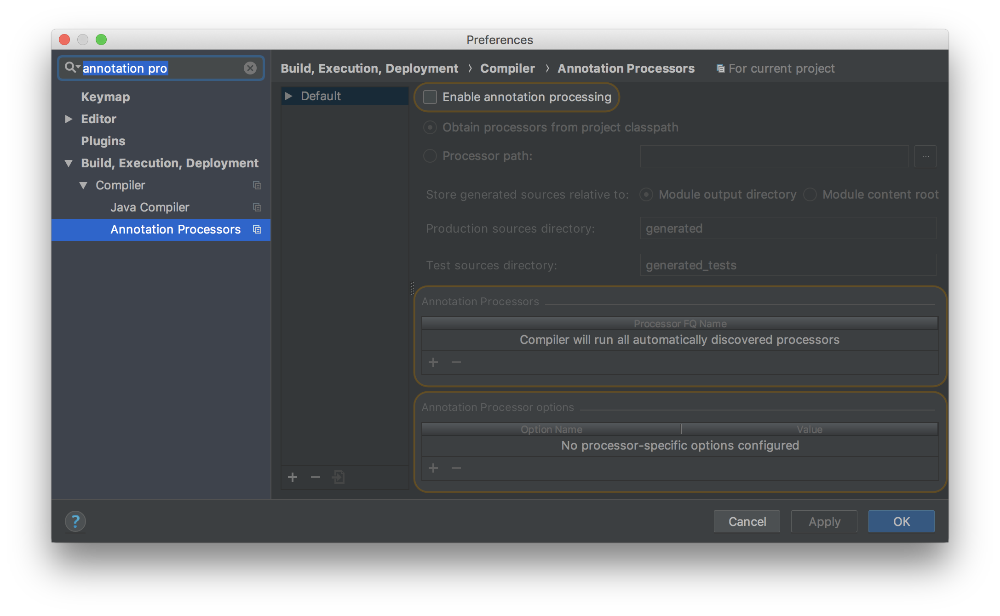

> git clone git@github.com:micronaut-projects/micronaut-core.git
2 Quick Start
Version: 1.0.0.BUILD-SNAPSHOT
Table of Contents
2 Quick Start
The following sections will walk you through a Quick start on how to use Micronaut to setup a basic "Hello World" application.
Before getting started ensure you have a Java 8 or above SDK installed and it is recommended having a suitable IDE such as IntelliJ IDEA.
To follow the Quick Start it is also recommended that you have the Micronaut CLI installed.
2.1 Build/Install the CLI
If you have not installed Micronaut on your local machine, you can build the distribution from source to use the CLI.
Clone the repository:
cd into the micronaut-core directory and run the following command:
> ./gradlew publishToMavenLocal
This will publish the CLI and core libraries to your local Maven cache.
In your shell profile (~/.bash_profile if you are using the Bash shell), export the MICRONAUT_HOME directory and add the CLI path to your PATH:
bash_profile/.bashrc
export MICRONAUT_HOME=~/path/to/micronaut-core
export PATH="$PATH:$MICRONAUT_HOME/cli/build/bin"Reload your terminal or source your shell profile with source:
> source ~/.bash_profile
You should now be able to run the Micronaut CLI.
> mn | Starting interactive mode... | Enter a command name to run. Use TAB for completion: mn>
2.2 Creating a Server Application
Although not required to use Micronaut, the Micronaut CLI is the quickest way to create a new server application.
Using the CLI you can create a new Micronaut application in either Groovy, Java or Kotlin (the default is Java).
The following command creates a new "Hello World" server application in Java with a Gradle build:
$ mn create-app hello-world
You can supply --build maven if you wish to create a Maven based build instead
|
The previous command will create a new Java application in a directory called hello-world featuring a Gradle a build. The application can be run with ./gradlew run:
$ ./gradlew run
> Task :run
[main] INFO io.micronaut.runtime.Micronaut - Startup completed in 972ms. Server Running: http://localhost:28933By default the Micronaut HTTP server is configured to run on a random port, but you can alter that by adding the following configuration to src/main/resources/application.yml:
micronaut:
server:
port: 8080In order to create a service that responds to "Hello World" you first need a controller. The following is an example of a controller written in Java and located in src/main/java/example/helloworld:
src/main/java/example/helloworld/HelloController.java
import io.micronaut.http.annotation.*;
@Controller("/hello") (1)
public class HelloController {
@Get("/") (2)
public String index() {
return "Hello World"; (3)
}
}| 1 | The class is defined as a controller with the @Controller annotation mapped to the path /hello |
| 2 | The @Get annotation is used to map the index method to all requests that use an HTTP GET |
| 3 | A String "Hello World" is returned as the result |
If you start the application and send a request to the /hello URI then the text "Hello World" is returned:
$ curl http://localhost:8080/hello
Hello World2.3 Setting up an IDE
The application created in the previous section contains a "main class" located in src/main/java that looks like the following:
package example.micronaut;
import io.micronaut.runtime.Micronaut;
public class Application {
public static void main(String[] args) {
Micronaut.run(Application.class);
}
}This is the class that is run when running the application via Gradle or via deployment. You can also run the main class directly within your IDE if it is configured correctly.
Configuring IntelliJ IDEA
The recommended IDE to use for Micronaut is Intellij IDEA. To import a Micronaut project into IntelliJ IDEA simply open the build.gradle or pom.xml file and follow the instructions to import the project.
For IntelliJ IDEA if you plan to use the IntelliJ compiler then you should enable annotation processing under the "Build, Execution, Deployment → Compiler → Annotation Processors" by ticking the "Enable annotation processing" checkbox:

Once you have enabled annotation processing in IntelliJ you can run the application and tests directly within the IDE without the need of an external build tool such as Gradle or Maven.
Configuring Eclipse IDE
If you wish to use Eclipse IDE, it is recommended you import your Micronaut project into Eclipse using either Gradle BuildShip for Gradle or M2Eclipse for Maven.
As of this writing, Eclipse has incomplete support for Java annotation processors, hence you will have to delegate to BuildShip or M2Eclipse for building and running tests.
2.4 Creating a Client
As mentioned previously, Micronaut includes both an HTTP server and an HTTP client. A low-level HTTP client is provided out of the box which you can use to test the HelloController created in the previous section.
For example, the following test is written using Spock Framework:
Testing Hello World
import io.micronaut.context.ApplicationContext
import io.micronaut.http.HttpRequest
import io.micronaut.http.client.HttpClient
import io.micronaut.runtime.server.EmbeddedServer
import spock.lang.*
class HelloControllerSpec extends Specification {
@Shared @AutoCleanup EmbeddedServer embeddedServer =
ApplicationContext.run(EmbeddedServer) (1)
@Shared @AutoCleanup HttpClient client = HttpClient.create(embeddedServer.URL) (2)
void "test hello world response"() {
expect:
client.toBlocking() (3)
.retrieve(HttpRequest.GET('/hello')) == "Hello World" (4)
}
}| 1 | The EmbeddedServer is configured as a shared and automatically cleaned up test field |
| 2 | A HttpClient instance shared field is also defined |
| 3 | The test using the toBlocking() method to make a blocking call |
| 4 | The retrieve method returns the response of the controller as a String |
In addition to a low-level client, Micronaut features a declarative, compile-time HTTP client, powered by the Client annotation.
To create a client, simply create an interface annotated with @Client. For example:
src/main/java/hello/world/HelloClient.java
import io.micronaut.http.annotation.Get;
import io.micronaut.http.client.Client;
import io.reactivex.Single;
@Client("/hello") (1)
public interface HelloClient {
@Get("/") (2)
Single<String> hello(); (3)
}| 1 | The @Client annotation is used with value that is a relative path to the current server |
| 2 | The same @Get annotation used on the server is used to define the client mapping |
| 3 | A RxJava Single is returned with the value read from the server |
To test the HelloClient simply retrieve it from the ApplicationContext associated with the server:
Testing HelloClient
import io.micronaut.runtime.server.EmbeddedServer
import spock.lang.*
class HelloClientSpec extends Specification {
@Shared @AutoCleanup EmbeddedServer embeddedServer =
ApplicationContext.run(EmbeddedServer) (1)
@Shared HelloClient client = embeddedServer
.applicationContext
.getBean(HelloClient) (2)
void "test hello world response"() {
expect:
client.hello().blockingGet() == "Hello World" (3)
}
}| 1 | The EmbeddedServer is run |
| 2 | The HelloClient is retrieved from the ApplicationContext |
| 3 | The client is invoked using RxJava’s blockingGet method |
The Client annotation produces an implementation automatically for you at compile time without the need to use proxies or runtime reflection.
The Client annotation is very flexible. See the section on the Micronaut HTTP Client for more information.
2.5 Deploying the Application
To deploy a Micronaut application you create a runnable JAR file by running ./gradlew assemble or ./mvnw package.
The constructed JAR file can then be executed with java -jar. For example:
$ java -jar build/libs/hello-world-all.jarThe runnable JAR can also easily be packaged within a Docker container or deployed to any Cloud infrastructure that supports runnable JAR files.